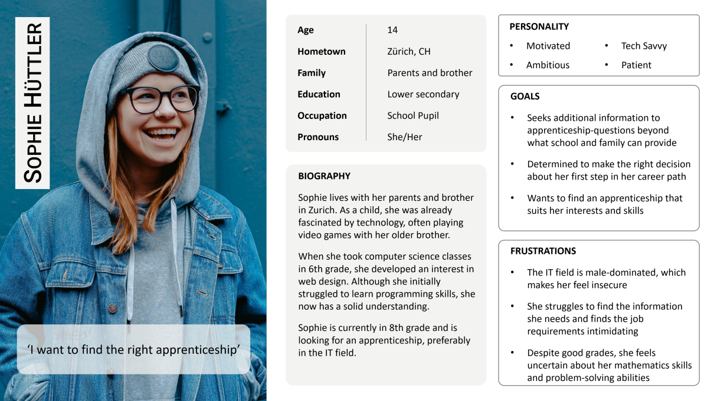

Bytementor is an app designed to help young people explore and navigate their educational and vocational paths. The app provides insights into different IT apprenticeships, offering career-related information, skills assessments and interactive exercises to help users understand daily job tasks. Additionally, it connects users with companies offering internships and apprenticeships, making career exploration more accessible and engaging.
This project was developed within the Prototyping module, where lectures followed the design-thinking process. I applied user-centered design principles to create a functional prototype while balancing coursework and other responsibilities. The project was conducted with a 40% workload, requiring efficient time management and collaboration to complete research, ideation, prototyping and testing phases successfully.
The user research began by identifiying potential problem areas. To unsere the app meets the needs of its target audience, we conducted interviews for empathy with four young women, aged 16 to 24, who are already in IT apprenticeships, as well as those still uncertain about their career choices.
Lack of Clarity
Mismatch between job description and actual tasks
Uncertainty
Insecurity about whether skills are sufficient for the job
Information Source
Gathering information from various sources complicates the process
Contant to Companies
Cantact options for internships and apprenticeships are limited
Lack of Clarity
Mismatch between job description and actual tasks
Uncertainty
Insecurity about whether skills are sufficient for the job
Information Source
Gathering information from various sources complicates the process
Contant to Companies
Cantact options for internships and apprenticeships are limited
The interviews revealed the need for an app that gives insights into daily job tasks and a place to test their skills. Young people also need a tool to connect with companies offering trial days or appreticeships, making career exploration more accessible.
Most importantly, we want to show in particular young weman that they don’t have to follow statistics — they can thrive and be happy in tech careers. While we encourage girls to explore these paths, our goal is not to force a choice but to ensure they feel empowered to make their own.
Using the qualitative data from interviews we created an Empathy Map, allowing us to gain deeper insights into the experiences and perspectives of our target audience.
With the insights we gathered, we developed a target group profile for Sophie, a representative persona that helps us better empathize with our main users. This allowed us to prioritize their needs, concerns, and expectations, ensuring that our app effectively addresses the challenges they face in exploring technical careers.
Next, we created a problem scenario to focus on the key needs we aimed to address. This was articulated from Sophie’s perspective, highlighting her challenges and uncertainties in exploring technical careers. The final scenario took shape as follows: